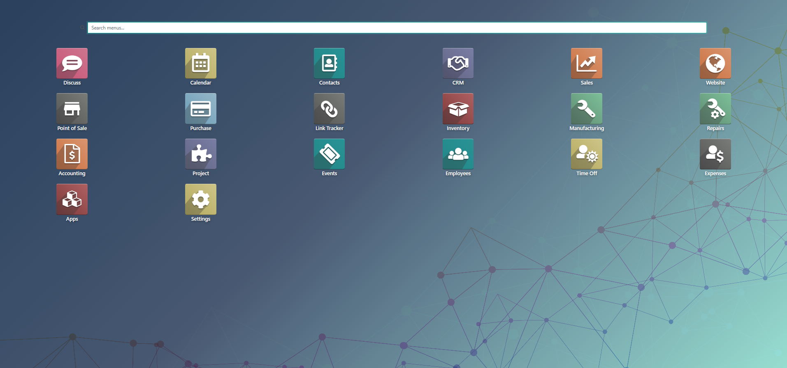
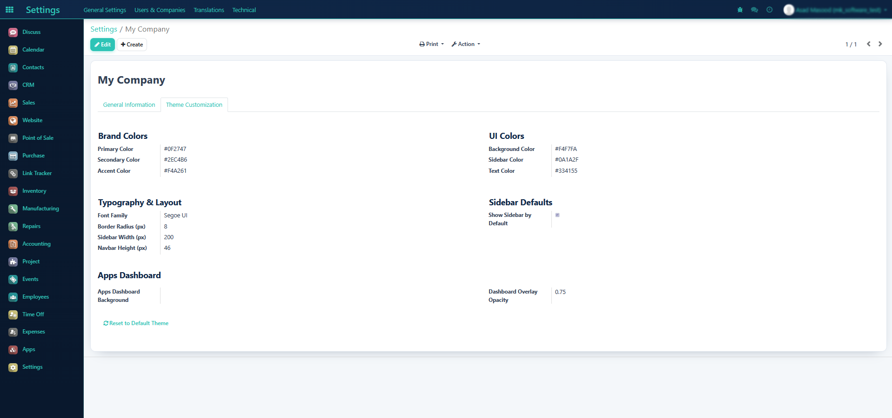

A fully customizable navy & teal backend theme for Odoo 14 Community — brand colors, apps dashboard, sidebar, and polished UI in a few clicks.
|
01
Theme CustomizationSet brand colors, UI colors, fonts, radius, sidebar width, and navbar height from Company settings. |
02
Apps DashboardFull-screen app launcher with custom company background and adjustable overlay opacity. |
03
User PreferencesEach user can show/hide the left app sidebar and choose their preferred font size. |
A clean full-screen apps menu with search, colorful app tiles, and a soft navy–teal atmosphere. Upload your own company background image to match your brand.

All theme options live on the company form under the Theme Customization tab — no code required. Change colors, typography, layout, and dashboard in one place.

Everything you need for a polished, branded Odoo backend.
|
Brand & UI Colors
Primary, secondary, accent, background, sidebar, and text colors. |
Typography & Layout
Font family, border radius, sidebar width, and navbar height. |
|
Apps Dashboard Background
Upload a company image and tune overlay opacity for readability. |
Left App Sidebar
Company default plus per-user show/hide and font size preferences. |
|
Soft Rounded UI
Buttons, forms, and lists with a soft enterprise look. |
Styled Login Page
Login screen styled to match the navy & teal theme. |
Follow these steps to brand your Odoo backend in minutes.
|
1
|
Open Company Settings
Go to Settings → Users & Companies → Companies and open your company (e.g. My Company). |
|
2
|
Open Theme Customization Tab
Click Edit, then select the Theme Customization tab next to General Information. |
|
3
|
Set Brand & UI Colors
Choose Primary, Secondary, Accent, Background, Sidebar, and Text colors
(defaults: |
|
4
|
Adjust Typography & Layout
Set font family, border radius, sidebar width, navbar height, and whether the sidebar is shown by default. |
|
5
|
Customize Apps Dashboard
Upload an Apps Dashboard Background image and set Dashboard Overlay Opacity (e.g. 0.75) so app icons stay readable. |
|
6
|
Save & Refresh
Click Save, then hard-refresh the browser (Ctrl+F5). Use Reset to Default Theme anytime to restore defaults. |
Users can personalize the theme without changing company defaults.
Quick setup for Odoo 14 Community.
soft_navy_backend_theme_v14)MKSOL TECH
Support: mksoltech@gamil.com · www.mksoltech.com